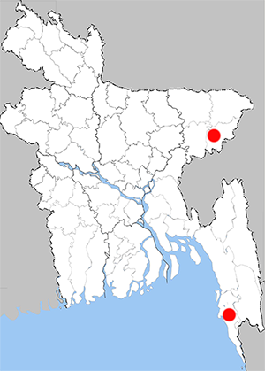

Taxila haquinus fasciata
Harlequin
Recorded Place: Moulvibazar, Cox's Bazar

Literature Records:
Chowdhury, S.H. & M. Hossain, 2025; PP: 366;. Butterflies of Bangladesh-A Pictorial Handbook (Revised and enlarged version II). Dhaka, Bangladesh, 260pp.
IUCN BANGLADESH. 2015. Red List of Bangladesh. Vol. 7: Butterflies. IUCN, International Union for Conservation of Nature, Bangladesh Country Office, Dhaka, Bangladesh xvi-400pp